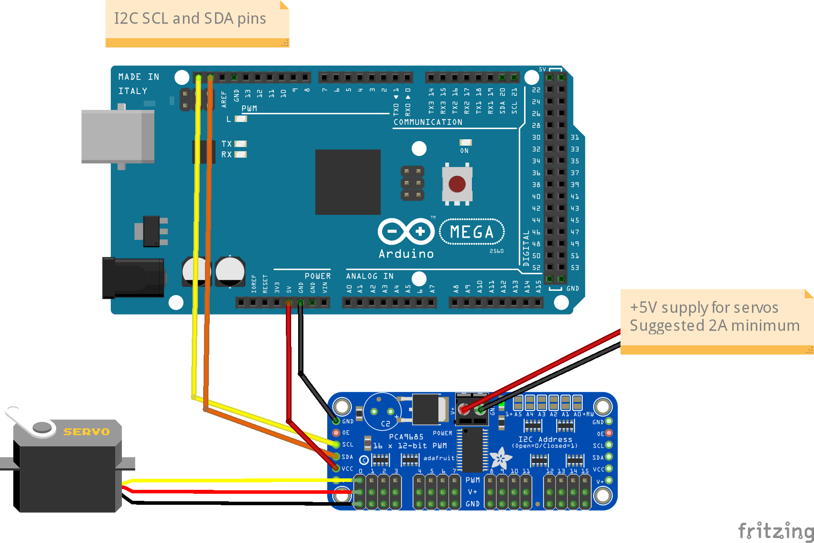

I2C Devices¶
With the advent of the Hardware Abstraction Layer (HAL), DCC++EX now has the capability for support for new I/O devices to be added without any change to the base software. By I/O devices I mean the things that are controlled through Sensors, Outputs and Turnouts (and more recently by commands in EX-RAIL too). Motor shields are not included in the HAL at present.
As a consequence of this, it is much easier to write a device driver, without the risk of breaking DCC++EX for other users. So there are various drivers available for you to use:
I2C-connected GPIO Expanders (MCP23017, MPC23008, PCF8574);
I2C-connected Servo Controller (PCA9685);
I2C-connected laser proximity detector (Time-of-Flight) (VL53L0X);
I2C-connected Analogue input modules (ADS111x);
Serial-port-connected DFPlayer MP3 player;
Ultrasound proximity detector (HC-SR04);
and others.
You will have noticed that a lot of the devices above have the name I2C in their description, so this section is an introduction to what I2C is and how to use it.
What is I2C?¶
I2C is a standard introduced by the Philips Semiconductors (now NXP Semiconductors) in the early 1980s to provide a mechanism for simple and economical communication between integrated circuits within a system, i.e. Inter Integrated Circuit (or IIC, or I-squared-C; hence I2C). The term I2C was originally under copyright, so other manufacturers sometimes use the term Two-Wire Interface (TWI).
I2C uses two bus wires (and the components share a ground and usually a power wire). One bus line is called SCL (clock) and the other is SDA (data). Both wires are pulled up to the power supply level (+Vcc) through a resistor, so when inactive, the wire is HIGH state (Vcc).
All I2C devices are connected to both the SDA and SCL lines, so are able to see whether the lines are pulled up (HIGH state) or pulled down (LOW state). Any device may activate one or the other line by connecting the wire to Ground, so that all of the other devices see a LOW state. The data is presented on the SDA line, bit by bit, in sync with the pulses on the SCL line.
The master is responsible for generating the clock signal on the SCL line, whether the Master is transmitting or the Slave is transmitting. Clock speeds for the Arduino are generally either 100kHz (Standard mode) or 400kHz (Fast mode). Other speeds may be selected, but the Arduino AVR microcontroller will not operate at speeds faster than 400kHz.
One device on the bus is termed as the MASTER. Only a Master device is able to initiate communications on the bus. The bus may also have a number of SLAVE devices. The slave only speaks when it is spoken to by a Master.
Note: The I2C standard allows for multi-master buses in which two or more Master devices may be present. DCC++EX only has a single Master, which is the DCC++EX controller itself.
Each Slave device has an address on the bus, which is normally 7 bits in length. I2C addresses are generally written in hex format, in the range 0x00 (0) to 0x7F (127). For example, a GPIO Expander device might have an address of 0x20, and an OLED display may be 0x3F.
Note: The addresses in the ranges 0x00 to 0x0f and 0x78 to 0x7f are reserved, and should not be used for devices. Also, the I2C standard allows for 10-bit addresses, but none of the devices currently used by DCC++EX support this.
When the Master wants to communicate with a Slave device, it sends the address of the device it wishes to communicate with, and a Slave device which matches that address will respond. The Master may then send further data which that Slave may interpret as a command. Or the Master may wait to allow the Slave to send data. In this way, we can have two-way data flows from Master to Slave, and from Slave to Master.
For more information about I2C, including a link to the I2C Standard, see https://www.i2c-bus.org/.
Addresses¶
Most I2C devices allow the address to be selected by adding or removing (or moving) jumpers. In some cases the jumpers are fitted on selector pins on the module, and the jumpers can be readily moved to select the address. For example, the MCP23017 can have address 0x20, 0x21, 0x22, … up to 0x27, by three jumpers. The PCA9685 has a whopping six jumpers, allowing the address to be selected from 0x40 up to 0x7F (although addresses 0x78 to 0x7F should not generally be used). Some modules, like the PCA9685, use solder jumpers, which are pairs of pads on the PCB that have to be bridged by a solder blob. OLED Display modules typically have only one pair of solder pads which allow the address to be selected to 0x3E or 0x3F (default 0x3F).
The image below shows a PCF8574 module, which has three yellow jumpers labelled A0-A2, currently shown in the right-hand position marked ‘–’ (=OFF). This means the address is set to 0x20. If we move all three jumpers to the left-hand position (‘+’=ON), then the address will be 0x27.
{kind=link}
Figure 1 - PCF8574 GPIO Expander Module
Address/Jumper Settings for GPIO Expander (base=0x20)
+=========+=====+=====+=====+
| Address | A2 | A1 | A0 |
+=========+=====+=====+=====+
| 0x20 | OFF | OFF | OFF |
| 0x21 | OFF | OFF | ON |
| 0x22 | OFF | ON | OFF |
| 0x23 | OFF | ON | ON |
| 0x24 | ON | OFF | OFF |
| 0x25 | ON | OFF | ON |
| 0x26 | ON | ON | OFF |
| 0x27 | ON | ON | ON |
+=========+=====+=====+=====+
Table 1 - I2C Address Setting Examples
The same address settings apply for the MCP23017 and MCP23008 devices, which also have three address jumpers A2-A0 and use the same address range 0x20-0x27.
One device notably uses software to configure the I2C address - the VL53L01 Time-Of-Flight sensor. It is pre-programmed with an address of 0x29, which you may use if you only have one TOF device. But if you have two or more devices, then at least one of them has to be programmed with a different address. This is achieved through an additional wire per module, connected to the module’s XSHUT pin. By operating the XSHUT pins, the device driver is able to programme one device at a time, while the remaining unprogrammed devices are held in the ‘shutdown’ state. So each device can use any I2C address!
Connector Styles¶
Many I2C devices come with a set of four pins, spaced by 2.5mm, for you to connect to. In some cases, the pins come separately and need to be soldered. If you’re not happy with soldering, then check before buying.
A common type of connector is the DuPont connectors, which are spaced by 2.5mm. They come in female form, which fits over a standard pin header, and male form, which fits into a connector block such as found on the Arduino boards. They come in the form of a length of ribbon cable (in standard lengths of 5cm, 10cm, 15cm and others) with each wire pre-fitted at both ends with either a female or male DuPont connector.
You can also purchase kits of Dupont pins/sockets and shells which, with the aid of a crimping tool, and a bit of practice, will enable you to make your own custom connectors.
Some devices (particularly from SeeedStudio, but some other manufacturers too) use a four-pin Grove male connector which takes a specific female connector, also manufactured and marketed by SeeedStudio. The pins in the Grove connector are on a spacing of 2.0mm, so will not directly the 2.5mm connector pins on most I2C device. However, converter cables are available with a Grove connector on one end and Dupont connectors on the other.
I find the JST-XH connectors to be very good; they are 2.5mm pitch so fit directly onto standard pin headers, and provide a more positive connection than the Dupont connectors. Again, they are available in kit form for crimping onto ribbon cables, or they can be found in pre-assembled form. Note that, while they look very much like the Grove connectors, they are a different size and are not interchangeable.

Figure 2 - From left-to-right, JST-XH connectors, Dupont connector shells, Dupont cable, and Grove converter cable.
Connecting Devices¶
The position of the I2C pins depends on what controller module you are using:
On the Arduino Nano, the I2C pins are labelled A4 (SDA) and A5 (SCL).
On the Arduino Mega, they are pins D20 (SDA) and D21 (SCL), which are nearest to the reset button.
On the Arduino Uno, you may use pins A4 (SDA) and A5 (SCL), or pins D20 (SDA) and D21 (SCL), which are in the same place as on the Mega. Bear in mind that, even if you use pins D20 and D21 for I2C, the pins A4 and A5 cannot be used for analogue inputs.

Figure 3 - Arduino Mega/Uno I2C pins
Some motor shields come with header pins for the I2C connections, for example the Arduino motor shield and the DeekRobot equivalent. The header pins are labelled, and are ringed in the images below.
{kind=link}
Figure 4 - Motor Shield I2C pins
The next image shows an Arduino Mega and Deekrobot motor shield mounted in a 3D-printed 6-inch rack case, with one set of I2C pins connected to an OLED display on the front of the case, and one set of I2C pins connected to two external connectors at the rear of the case. The orange wires connect four LEDs (with current-limiting series resistors) that provide panel indications of incoming 5V and 14V power, and of outgoing DCC power to the Main and Programming tracks. I’ve also mounted a small self-adhesive aluminium heat sink onto the L298P device.
{kind=link}
Figure 5 - Motor Shield I2C pins
I2C devices are all effectively connected in parallel to the bus. If you only have one device, you can just run a four-wire connecter between the pins on the Arduino, or on the motor shield, if you have one, to the device. Be sure to check that you connect SDA to SDA, SCL to SCL, Vcc to Vcc and GND to GND though - they are almost always in a different order on each device!

Figure 6 - Connecting an OLED Display to an Arduino Mega
{kind=link}
Figure 7 - Connecting a PCA9685 Servo Controller to an Arduino Mega
If you have more than one device, then there are a few options open to you. Some modules (PCA9685 and PCF8574 for example) have I2C pins at both ends of the PCB, so you can use one set of pins to connect to the Arduino and the other set to connect to another device. You can chain multiple devices, subject to the restrictions described in sections for Cabling and Pull-ups.

Figure 8 - Connecting Two Servo Controllers
Alternatively, you can use an I2C hub, which you can purchase (SeeedStudio do one, but check that you have compatible connectors - it uses Grove connectors); or you can make one. You can use a breadboard with jumpers, or a stripboard with 4 rows of pins. Just ensure that the strips separately connect all the SCL pins together, all the SDA together, all the Vcc together and all the GND together. SeeedStudio also sell 4-wire cables with three connectors (also Grove), allowing a single connector to ‘fan out’ to two devices; by connecting another cable, you can add another device, and so on.
I use a small piece of stripboard with various 4-way pin headers and sockets soldered in, to allow various devices to be plugged in and removed as required. There is a mixture of pin headers and sockets (which accept Dupont cables) and JST-XH male sockets (which accept female cable connectors, or female Dupont connectors. I also have a four-way socket header connected in parallel, into which an OLED display is fitted for testing.

Figure 9 - Home-brew I2C Hub, on Vero Stripboard (strips running left-to-right)
If you just want a temporary hookup for multiple I2C devices, then you can use a small piece of breadboard. The board shown has space for five Dupont connectors in each half row.

Figure 10 - I2C Hub on Breadboard
Pull-ups¶
The I2C bus will not work unless pull-up resistors are connected to the SDA and SCL lines. However, it’s not very often that you will have to install your own pull-up resistors. Most microcontrollers have the capability to enable internal pull-ups, corresponding to around 20-50kOhm. And most I2C device modules (but not the bare I2C chips), contain 10kOhm pullup resistors.
The ideal pull-up resistor value for I2C is around 1.7kOhm (at 5V, 400kHz clock), in order to be able to use long cables and high speeds. With shorter cables (<1-2m) an internal or module pull-up will generally be sufficient.
However, if you have multiple I2C modules, the pull-up resistors in them will be effectively in parallel. So two modules give an equivalent pull-up of 5kOhm, and five modules gives an equivalent pull-up of 2kOhm. With 6 or more modules, the pull-up value is, strictly, too low, and some devices, if they only just satisfy the I2C specification, may be unable to pull the bus voltage down far enough to be recognised as a LOW state. In this case, you may need to seek solutions like removing the pull-up resistors from some or all of the modules, and/or adding your own fixed pull-up. Or adding an I2C multipexer, which will disconnect some devices from the SCL/SDA lines when they are not being actively addressed.
Removal of Pull-ups¶
If you want to remove the pull-ups from your modules and add your own (single) pull-up resistor to the I2C bus, then the first thing to do is identify which components on the module PCB are the pull-up resistors. Many modules have full documentation available (including circuit diagram and PCB layout), which will help to identify the pull-ups. Check the web sites for the suppliers.
As examples of where to find the pull-up resistors, take a look at the figures below:

Figure 11 - Location of Pull-up Resistors for PCA9685 Module (ringed in red)

Figure 12 - Location of Pull-up Resistors for PCF8574 Module (ringed in red)
Check the PCB tracks from the SDA and SCL pin connectors; one side of each resistors will be connected to one of these, and the other side of both will be connected to the Vcc supply.
IMPORTANT: When you desolder the resistors, ensure that you don’t leave any residual solder forming a connection between the two pads.
Cabling Limits¶
The I2C bus spec allows bus operation at various speeds - on the Arduino, speeds of 100kHz and 400kHz are generally used. Some devices are not specified to operate at the higher speed (e.g. PCF8574) although my testing hasn’t shown any problems.
The number of devices and the amount of cable on an I2C bus is limited, in the I2C specification, only by the total capacitance, which at 400kHz should be no more than 400pF. At this capacitance and the optimal pull-up value, the time taken for the bus wire to be pulled up from LOW to HIGH state is significant, compared to the pulse length. With a higher pull-up value (e.g. 10kOhm), the maximum permitted capacitance will be lower. If you need to run with higher capacitance (e.g. for longer cables), then it is possible to reduce the I2C clock speed. On DCC++EX, operation will continue even with I2C speeds of 32kHz or lower, although the scan interval for digital inputs, and the refresh time for I2C displays, may be noticably slower at speeds lower than 32kHz.
Changing the Clock speed¶
In DCC++EX the I2C clock speed is normally the highest speed supported by all configured devices. It may however be overridden within the mySetup.h or myHal.cpp file, with a command of the form:
I2CManager.forceClock(100000);
(this sets the clock speed to 100kHz.)